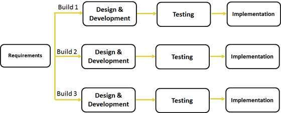
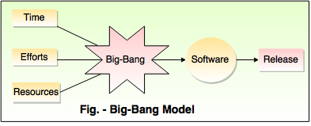

Software Development Life Cycle
Waterfall Model design

Disadvantages
- No working software is produced until late during the life cycle.
- High amounts of risk and uncertainty.
- Not a good model for complex and object-oriented projects.
- Poor model for long and ongoing projects.
- Not suitable for the projects where requirements are at a moderate to high risk of changing. So risk and uncertainty is high with this process model.
- It is difficult to measure progress within stages.
- Cannot accommodate changing requirements.
- Adjusting scope during the life cycle can end a project.
- Integration is done as a "big-bang. at the very end, which doesn't allow identifying any technological or business bottleneck or challenges early.
Iterative Model design

Disadvantages
Spiral Model design

Disadvantages
V- Model design

Disadvantages
- High risk and uncertainty.
- Not a good model for complex and object-oriented projects.
- Poor model for long and ongoing projects.
- Not suitable for the projects where requirements are at a moderate to high risk of changing.
- Once an application is in the testing stage, it is difficult to go back and change a functionality.
- No working software is produced until late during the life cycle.
Big Bang Model

Disadvantages
- Very High risk and uncertainty.
- Not a good model for complex and object-oriented projects.
- Poor model for long and ongoing projects.
- Can turn out to be very expensive if requirements are misunderstood